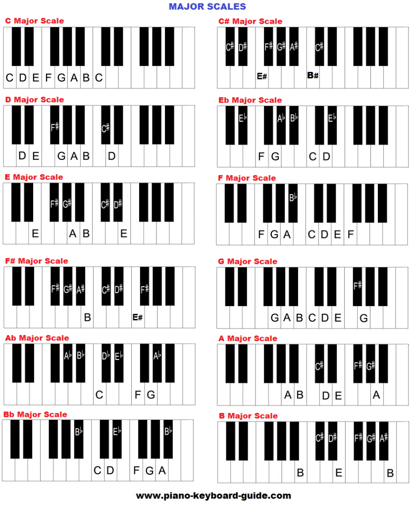

Major chords, according to Landr.com, sound full, resolved, and complete. They are usually thought of as having a "happier" sound, but this is not always the case, as there are grey areas with what is perceived as happy or not.
Major chords are created by taking the root note, the major third interval, and the perfect fifth interval and combining them together. The major third is the distance between the root note and the note four semitones above it, and the perfect fifth is seven semitones above the root. Simply put, to create a major chord, you go up 4 semitones (individual notes) from the root note, and then up 3 from the second note.